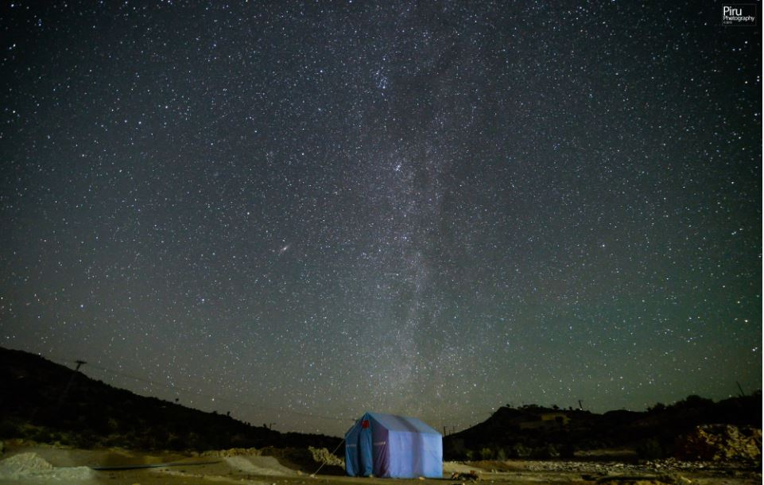

Since the start of 2015, Gorakh Hill Station has been under the spot light throughout the year so far. It is known as the only place in Sindh which has a moderate/cool climate during summers and very cold winters, as it is located at an altitude of 5,688ft. above the sea level. This year, in the months of January and February, it snowed twice. Temperatures go as low as -7C during winters. It is also known as ‘The Murree of Sindh’. What majority of the people don’t know is that Gorakh Hill is not the only highest place in Sindh. There is a plateau higher than Gorakh called Daryaro/Dharhiaro Plateau (approx. 6,500ft. above sea level). Moreover, there are two other higher peaks in the Kirthar Range that lie on the border of Sindh-Balochistan; Kutte-Ji-Qabar (6,877ft. above sea level) and the highest peak of Sindh – Barugh Top (approx. 7,156ft. above sea level). Unfortunately, the government has taken no actions to develop these three places, which can be major tourist attractions.
Anyway, let’s talk about Gorakh! Gorakh Hill Station still needs a lot of development but unlike the other places mentioned above, it is easily reachable and has food/accommodation facilities. Gorakh is located 100km west of Dadu in Sindh. To go to Gorakh, one has to reach Wahi Pandhi (the last town before Gorakh), bypassing Dadu and Johi. From Wahi Pandhi, 4×4 jeeps are hired which take you to the top of Gorakh and stay with you overnight. As you go up the hill, the air gets thinner and colder. There are huts and a restaurant for the tourists made by Gorakh Development Authority. You can rent a room if you want more comfort or a huge tent if you like camping and adventure.
Three most important things that you must do at Gorakh:
1) Witness sun set behind the the smaller hills of Khuzdar, while you’re standing in Sindh.
2) Star Gazing! You can see millions of stars with your naked eye, even the Milky Way!
3) Watch the sunrise and appreciate mother nature.
Gorakh Hill Station is a very good place for the people who want to seek escape from their busy lives for a short time.

Road to Gorakh from Wahi Pandhi.
Setting up our own camps. In the background, the 4×4 jeeps, huts & restaurant, and Benazir View Point can be seen.
Ray of sunlight coming from between the gaps of the hills.
Overlooking Gorakh.
Moments before the sunset.
Bonfire and camping under the moonlight.
Millions of stars and the Milky Way. Andromeda is also visible.
Star trails that I made using 24 long exposure images.
The calmness of sunrise.